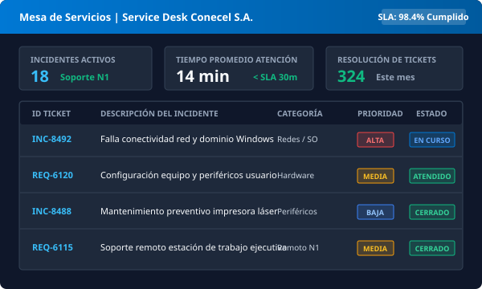

Mesa de Servicios & Soporte N1 (Conecel S.A.)
Gestión integral de tickets e incidencias mediante Service Desk para Conecel S.A. (vía HITSS, CELLOPTI y COMPUEQUIP DOS). Diagnóstico y mantenimiento a hardware, software, Windows, impresoras y periféricos, con atención remota y presencial bajo cumplimiento de SLA.
Mesa de Servicios
Gestión de Tickets
SLA
Hardware & Software
Windows